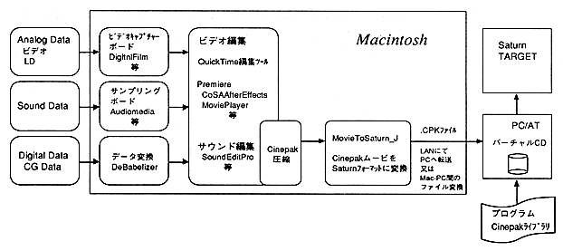

Figure 1.1 System image
● Macintosh 680X0 series
PowerPC system (680X0 emulation)
● QuickTime Ver.1.61, Ver.2.0
, Ver.1.62 (for PowerPC)
● PC / AT compatible machine Virtual CD compatible product
A network environment is required to transfer Cinepak movie converted to Saturn format to PC / AT